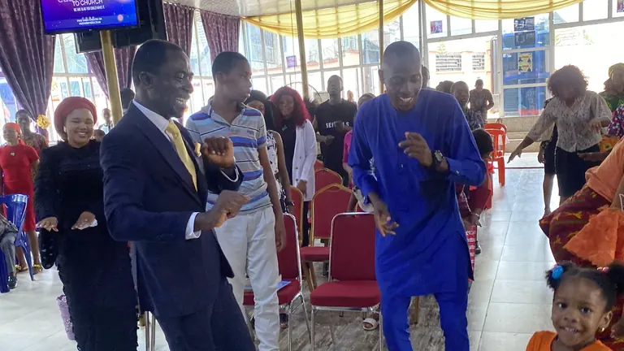
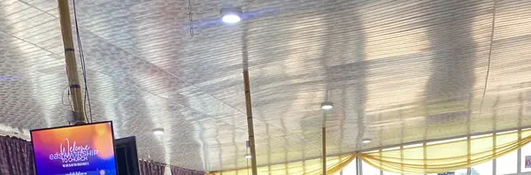
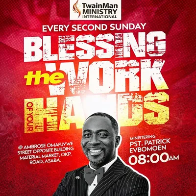

TwainMan Ministry International
Ambrose Omafuvwe Street, Opposite Building Material Market, OKP Road, Asaba
Gallery
Every picture here is the church's own. Select one to see it larger; use the arrow keys to move between them.



These are all the photographs the church has supplied. They come from two occasions: a Sunday gathering in the main hall, and the Gethsemane Camp Meeting of 2024.